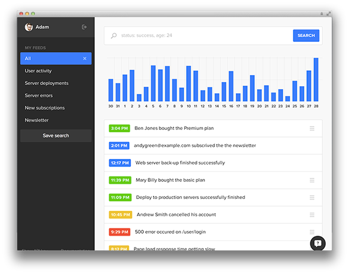

MySpace
No introduction required! Everyone knows MySpace, and the upcoming https://new.myspace.com is powered by Express.

LearnBoost
LearnBoost provides a free, easy to use online education suite including gradebook, lesson plans, attendance, reporting, and calendars among other tools.

Storify
Create stories using social media. Turn what people post on social media into compelling stories. Collect the best photos, video, tweets and more to publish.

Geekli.st
A place for geeks to share what they've done, who they did it with and connect with great companies and communities.

Klout
Klout is the Standard for Influence. Join Klout to discover your influence and compare with others you may know.

Prismatic
Prismatic learns from how you interact on social networks so that we can show you the most interesting content and conversation from your friends.

Clipboard
Clipboard is a powerful tool allowing to save live clips of your interests on the web, not just static images, but fully-functional fragments of anything online.

StudyNotes
At StudyNotes, we are building beautiful and simple learning tools to empower students to accelerate their learning – i.e. to learn more effectively, in a shorter time, and with better long-term recall.

Persona
Persona, or "BrowserID" is Mozilla's answer to a better identification system for your browser, this promising tool is definitely worth checking out.

Countly
Extensive real-time mobile analytics as a service.

Balloons.io
A beautiful open-source realtime chat application backed by Express.

Segment.io
No more littering your app with tons of different analytics providers. Instead, instrument your app once cleanly and then send your data to any analytics service you want.

Yummly
Yummly is the world's largest and most powerful recipe search site. Bringing together recipes from all over the web - making your life easier.

Koding
Real-time software development in the browser with integrated editor, collaboration, terminals and more.

Apiary.io
REST API documentation reimagined.

Cozy
Cozy is the personal cloud that allows you to put your web apps and your data on your hardware: calendars, contacts, feeds, notes. With Cozy, you can build and use your own Express app and use the data stored by the other applications.

FlyLatex
Real-time Collaborative environment for LaTex.

SimpleSet
Advanced exercise prescription software for physical therapists and other health professionals.

Ghost
Just a blogging platform.

LogHuman
LogHuman is an application insights platform which enables developers to record information such as billing events, feature usage, or system hiccups, as well as flexible metadata to give these events context.
and more!
Shodan search reports that there are well over 26,000 Express applications in the wild, we can't possibly list them all here, but if you feel your application helps showcase the framework open an issue on the github repo.